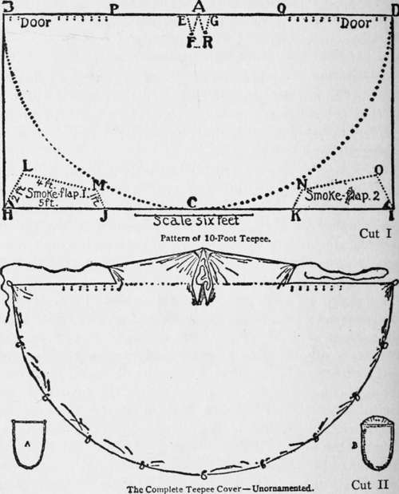
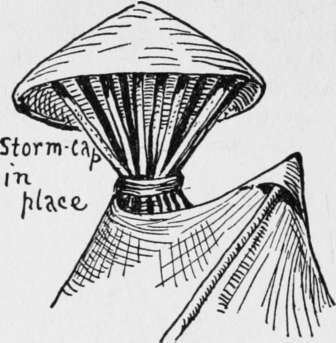

XVI. Some Indian Ways
Description
This section is from the book "The Book Of Woodcraft", by Ernest Thompson Seton. Also available from Amazon: The Book of Woodcraft.
XVI. Some Indian Ways
Teepees (From Ladies' Home Journal, September, 1902)
MANY famous campers have said that the Indian teepee is the best known movable home. It is roomy, self-ventilating, cannot blow down, and is the only tent that admits of a fire inside.
Then why is it not everywhere used? Because of the difficulty of the poles. If on the prairie, you must carry your poles. If in the woods, you must cut them at each camp.
General Sibley, the famous Indian fighter, invented a teepee with a single pole, and this is still used by our army. But it will not do for us. Its one pole is made in part of iron, and is very cumbersome as well as costly.
In the "Buffalo days" the teepee was made of buffalo skin; now it is made of some sort of canvas or cotton, but it is decorated much in the old style.
I tried to get an extra fine one made by the Indians, especially as a model for our boys, but I found this no easy matter. I could not go among the red folk and order it as in a department store.
At length I solved the difficulty by buying one ready made, from Thunder Bull, a chief of the Cheyennes.
It appears at the left end of the row of teepees heading this chapter.
This is a 20-footer and is large enough for 10 boys to live in. A large one is easier to keep clear of smoke, but most boys will prefer a smaller one, as it is much handier, cheaper, and easier to make. I shall therefore give the working plan of a 10-foot teepee of the simplest form - the raw material of which can be bought new for about $5.
It requires 22 square yards of 6- or 8-ounce duck, heavy unbleached muslin, or Canton flannel (the wider the better, as that saves labor in making up), which costs about $4; 100 feet of 3/16-inch clothesline, 25 cents; string for sewing rope ends, etc., 5 cents.
Of course, one can often pick up second-hand materials that are quite good and cost next to nothing. An old wagon cover, or two or three old sheets, will make the teepee, and even if they are patched it is all right; the Indian teepees are often mended where bullets and arrows have gone through them. Scraps of rope, if not rotted, will work in well enough.
Suppose you have new material to deal with. Get it machine run together 20 feet long and 10 feet wide. Lay this down perfectly flat (cut I). On a peg or nail at A in the middle of the long side put a 10-foot cord loosely, and then with a burnt stick in a loop at the other end draw the half-circle BCD. Now mark out the two little triangles at A. A E is 6 inches, A F and E F each one foot; the other triangle, A R G, is the same size. Cut the canvas along these dotted lines. From the scraps left over cut two pieces for smoke-flaps, as shown. On the long corner of each (H in No. 1, I in No. 2) a small three-cornered piece should be sewed, to make a pocket for the end of the pole.
Now sew the smoke-flaps to the cover so that M L of No. 1 is neatly fitted to P E, and N O of No. 2 to Q D.
Two inches from the edge B P make a double row of holes; each hole is inches from its mate, and each pair is 5 inches from the next pair, except at the 2-foot space marked "door," where no holes are needed.
A - Frame for Door. B - Door Completed.
The holes on the other side, Q D, must exactly fit on these.
At A fasten very strongly a 4-foot rope by the middle.
Fasten the end of a 10-foot cord to J and another to K; hem a rope all along in the bottom, BCD. cut 12 pieces of rope each about 15 inches long, fasten one firmly to the canvas at B, another at the point D, and the rest at regular distances to the hem rope along the edge between, for peg loops. The teepee cover is now made.
For the door (some never use one) take a limber sapling 3/4 inch thick and 5 1/2 feet long, also one 22 inches long. Bend the long one into a horseshoe and fasten the short one across the ends (A in cut II). On this stretch canvas, leaving a flap at the top in the middle of which two small holes are made (B, Cut II), so as to hang the door on a lacing-pin. Nine of these lacing-pins are needed. They are of smooth, round, straight, hard wood, a foot long and 1/4 inch thick. Their way of skewering the two edges together is seen in the Omaha teepee at the end of the line below.
During long continued or heavy rains, a good deal of water may come in the smoke vent or drip down the poles. To prevent this the Missouri Indians would use a circular bull-boat of rawhide on a frame of willows as a storm cap.
For a twelve-foot teepee the storm cap should be about four feet across and eighteen inches deep, made of canvas with a hem edge in which is a limber rod to keep it in circular shape. It is usually put on with a loose teepee pole, and sits on top of the poles as shown, held down if need be by cords to its edge.
STORM CAP OR BULL-BOAT.
The poles should be short and even for this.
Continue to:
Tags
bookdome.com, books, online, free, old, antique, new, read, browse, download